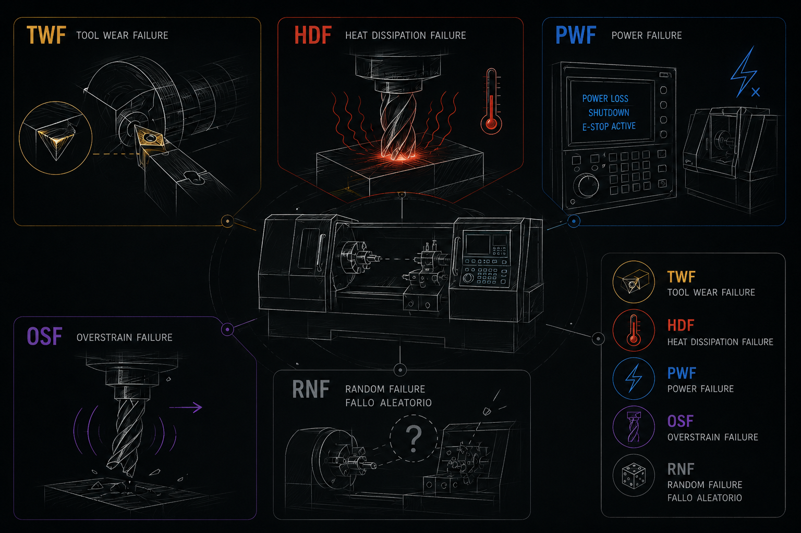

Predicción de
fallos en
máquinas industriales
Cómo se construye, evalúa y combina un sistema de mantenimiento predictivo sobre 4 datasets reales y un problema fuertemente desbalanceado.
Clasificación binaria desbalanceada
Predecir si una máquina va a fallar (sí / no) a partir de las lecturas de sus sensores. El reto no es el modelo, es que el fallo es raro: solo 3,4 % de los registros.
Un clasificador trivial que prediga siempre "Normal" obtiene 96,6 % de accuracy y recall 0. La accuracy es inservible aquí.
Más peso al fallo
Penalizar más los errores sobre la clase fallo para que el modelo no la ignore.
Ajuste de umbral
No usar 0,5: optimizar el umbral según el coste real de cada error.
Métricas adecuadas
Recall, Precision, F1 y curva PR — no accuracy.
Un pipeline, cuatro fuentes
Cada dataset recorre el mismo flujo reproducible, de los datos en bruto al modelo evaluado.
AI4I 2020
UCI · 10.000 registros sintéticos etiquetados. Conjunto principal.
CNC Mill
Kaggle · 18 experimentos de corte real. Desgaste de herramienta.
KIT / Industrial
Fresadora 5 ejes a 500 Hz. 33 experimentos, 15 anomalías.
SPARK TEC
11 máquinas, año 2024. ~500k lecturas/min cada una. Sin etiquetas.
Los 5 modos de fallo
AI4I 2020 · pasa el ratón sobre los puntos para ver cada modo
TWF · Tool WearRotura por desgaste de herramienta. Su umbral de rotura es aleatorio (200–240 min) — el fallo más difícil de detectar. HDF · Heat DissipationFallo por mala disipación de calor: la máquina no enfría y se recalienta. PWF · PowerLa potencia mecánica se sale del rango de seguridad (3,5–9 kW). OSF · OverstrainSobreesfuerzo: demasiada fuerza acumulada (desgaste × torque). RNF · RandomFallo aleatorio, sin firma reconocible en los sensores.Features con sentido físico
A las 5 lecturas crudas añadimos 4 variables derivadas que codifican el conocimiento de dominio — exactamente las señales que mira un mecánico experto.
Torque × ω
Potencia mecánica. El criterio físico real del fallo PWF (3,5–9 kW).
Tproc − Taire
Salto térmico. Si no disipa, recalienta → HDF.
Wear × Torque
Sobreesfuerzo acumulado. Detonante directo de OSF.
Wear / umbral
Desgaste relativo al límite por tipo (L 200 / M 220 / H 240).
El mismo preprocesado se aplica de forma idéntica a entrenamiento y test, evitando que el modelo "vea" información que no debería y se evalúe de forma realista.
Recall primero, coste asimétrico
En mantenimiento, un Falso Negativo (fallo no visto) cuesta ~10.000 €; un Falso Positivo (alarma falsa) ~300 €. Optimizamos en consecuencia.
- Recall = TP/(TP+FN) — métrica principal: de los fallos reales, cuántos cazamos.
- Precision = TP/(TP+FP) — de las alarmas, cuántas son ciertas.
- F1 — balance Precision-Recall para comparar modelos.
- Curva PR sobre ROC: más informativa con clase minoritaria.
Matriz del modelo final sobre 2.000 registros de test (68 fallos).
Cinco enfoques comparados
Del lineal al boosting, todos con peso de clase. El umbral 0,5 es solo el punto de partida — se ajusta después.
| Modelo | Precision | Recall | F1 | ROC-AUC |
|---|---|---|---|---|
| LightGBM ★ | 0,95 | 0,84 | 0,89 | 0,97 |
| XGBoost | 0,84 | 0,84 | 0,84 | 0,98 |
| Random Forest | 0,96 | 0,71 | 0,81 | 0,97 |
| SVM | 0,31 | 0,93 | 0,46 | 0,97 |
| Regresión Logística | 0,18 | 0,90 | 0,30 | 0,94 |
LightGBM es el mejor equilibrio (F1 0,89). Los modelos boosting dominan en datos tabulares.
SVM y LogReg tienen recall alto (0,93 / 0,90) pero precision ínfima: inundan de falsas alarmas. F1 lo delata.
El umbral es un parámetro
No usamos 0,5: ajustamos el umbral buscando el mejor equilibrio. Mueve el control y observa el compromiso entre cazar más fallos y disparar falsas alarmas.
Producción — mínimas falsas alarmas. El punto de operación elegido para el modelo final.
Los fallos invisibles
De los 10 fallos que escapan, 7 son TWF con desgaste alto pero torque moderado. No es que el modelo sea malo: la causa raíz no está en los datos.
| FN invisibles | Normal | |
|---|---|---|
| Tool Wear medio | 202 min | 107 min |
| Torque medio | 35,8 Nm | 39,6 Nm |
| Wear×Torque | 7.355 | 4.251 |
- TWF se dispara con un umbral aleatorio e individual por herramienta (200–240 min).
- Ese umbral no es observable en ningún sensor del dataset.
- Dos piezas con el mismo desgaste relativo: una falla y otra no — indistinguibles.
- Son ~2 % de todos los fallos: el límite teórico con las features actuales.
Reconocer este límite — en vez de sobreajustar para tapar 7 casos — es parte del rigor del análisis.
Modelo de dos etapas
Un modelo especialista en desgaste de herramienta genera una señal de riesgo que enriquece al modelo combinado, con validación cruzada para que la evaluación siga siendo honesta.
Riesgo de rotura de herramienta
Se entrena solo con las variables de desgaste (desgaste, torque, tipo de pieza) y estima, para cada operación, el riesgo de que la herramienta se rompa.
Probabilidad de fallo
Combina LightGBM y Random Forest sobre las variables originales más la señal de riesgo del especialista, y decide con el umbral óptimo de producción.
0,73 → 0,94
22 → 4
0,89 · 0,985
Recall se mantiene en 0,85 mientras los falsos positivos caen 5×: el especialista aporta una señal limpia que el stacking sabe aprovechar.
¿Qué mira el modelo?
Importancia SHAP sobre el mejor modelo: cuánto pesa de media cada variable en la decisión final.
Las features derivadas (Temp Diff, Power, wear_ratio) están entre las más influyentes: el feature engineering físico funciona, no es decorativo.
¿Y si conociéramos la herramienta?
Si el sistema registrara la identidad y el desgaste acumulado de cada herramienta, sabríamos la distancia exacta de cada una a su punto de rotura.
| Métrica | Actual | + tool-ID |
|---|---|---|
| Recall | 0,85 | 0,94 |
| F1 | 0,91 | 0,95 |
| ROC-AUC | 0,975 | 0,995 |
| FN | 10 | 4 |
- Rescata 6 de los 7 fallos invisibles.
- Convierte una variable latente (el umbral) en observable.
- No desplegable hoy: requiere trazabilidad de herramienta en planta.
Marca el techo alcanzable y la inversión que lo desbloquea — no se vende como resultado de producción.
El método sobre datos reales
Mismo pipeline, tres retos distintos: pocos datos, alta frecuencia y ausencia de etiquetas.
Desgaste worn/unworn
18 experimentos, LOO-CV. Mejor modelo GradientBoosting: F1 0,78, AUC 0,70. El reto es el tamaño.
Anomalía 5 ejes
33 experimentos (15 anomalías), 500 Hz. Random Forest balanced: F1 0,65, recall 0,67, AUC 0,75.
Anomalía eléctrica
11 máquinas, cientos de miles de lecturas por minuto. Detección de anomalías por máquina: marca el 5 % más atípico. Sin etiquetas.
Sin etiquetas de fallo, el enfoque cambia a detección de anomalías: el modelo aprende lo "normal" y marca lo que se desvía.
Sistema de 3 capas
Los 4 datasets se integran en una arquitectura de escalada por triaje: barato y amplio primero, caro y preciso solo si hay alarma.
Qué aprendimos
Boosting + stacking + 2 etapas
F1 0,89, AUC 0,985, falsos positivos 22→4. El feature engineering físico es decisivo (confirmado por SHAP).
Recall y umbral por coste
El umbral no es 0,5: se elige con la matriz de coste FN/FP. La curva PR guía la decisión.
7 TWF irreducibles
Sin trazabilidad de herramienta, ~2 % de fallos no tienen señal. Reconocerlo > sobreajustar.
Tool-ID y temporales
Registrar herramienta (F1→0,95) y features de ventana temporal. Desplegar el sistema por capas.
Metodología reproducible de principio a fin: 4 datasets, 5 modelos comparados, un modelo final de 2 etapas y un sistema integrado por capas.
que decide cuándo intervenir.
¿Preguntas?
4 datasets · 5 modelos base · stacking de 2 etapas · F1 0,89 · AUC 0,985